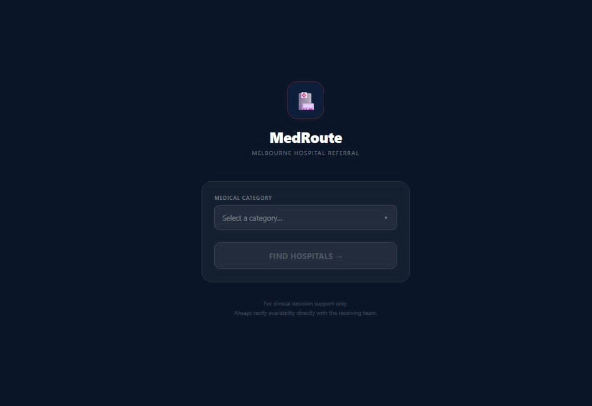
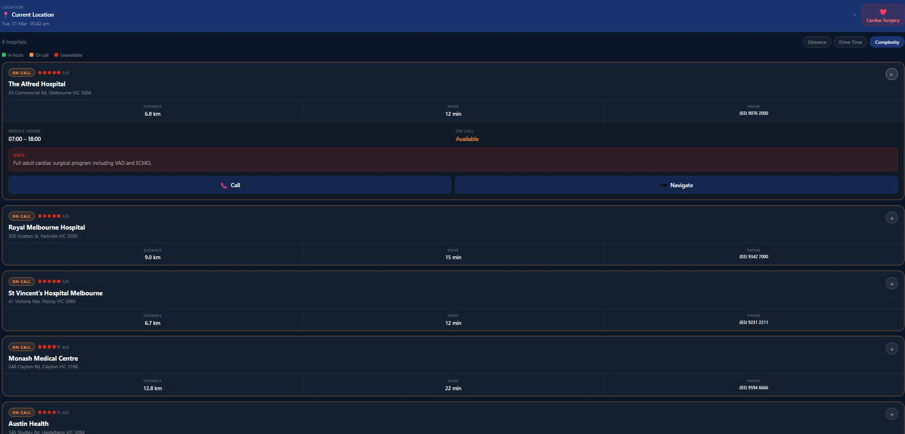

My girlfriend is a paramedic, and apparently at night if someone gets injured, they have a massive excel spreadsheet to see what hospitals are open. She's asked me to make her an app so that she can just put her location, the department requirements (cardiac, neuro, spinal etc.) and have a sorted list of hospitals that offer those services,with the oncall number if it's late.
This will be a good opportunity to play around with the google maps API, and learn some iOS and Android dev. It seems trivial to return a sorted list of JSON items, but there's a few things to consider when it comes to API calls for the live traffic data without completely blowing the free monthy allowance. This will be especially important as she's told me that it will be useful for some of her colleagues who regularly work cross region - even during the day if you're working across the other side of Melbourne it would be good to know what's close.
